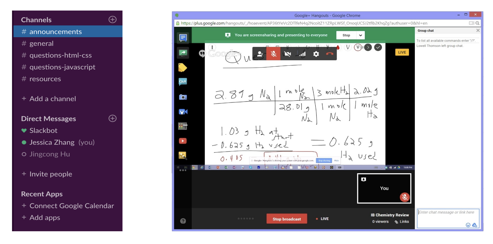

Introduction
Slack is an instant messaging platform that bridges online communication and in-person collaboration amongst large groups of people. Its unique design integrates workspaces that promote the organization of communication by channels as well the option to send information through private messages. However, Slack is not the only product of this nature. It shares the market with many competitors and in order to survive, the strengths and weaknesses of these products must be evaluated and understood. Specifically, I focused on analyzing what types of people undoubtedly gravitate towards Slack, for what reasons and which functionalities. This is important because the identification of loyal audiences can allow Slack to know what aspects of its product to focus on and who to cater to. By evaluating Slack and its competitors on 24 different attributes, I can understand where Slack stands amongst its competitors and what can be changed to make it better.
Methods
In order to determine Slack’s competitors, I looked at multiple different websites that listed out Slack alternatives and competitors. Chanty was mentioned multiple times and most comparable to Slack in terms of audience, communication, accessibility, and aesthetics, flaunting off a clean interface that gave off a similar vibe as Slack. Therefore, I decided to include it in my competitive analysis as a tier one competitor. Other products that caught my attention were Cisco Webex Teams and Google Hangouts, both of which support messaging features like Slack but focus more on interactive aspects like video calling and whiteboard sharing. They were comparable to Slack in terms of audience and communication, but the extra features affected accessibility and privacy and made the products less directly competitive. Because of this, I decided to include them as tier two competitors. Lastly, I decided on GroupMe for the niche because it is a product a lot of students use for group communication. Although it does not provide the extra features Slack does, it competes with Slack in terms of audience and specifically group communication.
For the criteria used for comparing the products to Slack, I chose 8 different categories to focus on: audience, pricing, communication, accessibility, aesthetics, personalization, privacy and ratings. I decided to include audience, communication, accessibility and aesthetics because they were the main things the products had in common. Pricing, personalization, privacy and ratings were some things that differentiated the products from each other so I decided it would be a good idea to use these categories for contrast. To collect this data, I looked at each product’s office websites as well and their respective pages on the app store to understand how they were advertising themselves and to gather opinions from users about the products. With this information, I created a competitive matrix and used it for analysis.
Findings and Recommendations
As messaging platforms, Slack and its competitors fair pretty evenly when it comes to communication. All of them support group and individual conversations as well as the ability to make the chats public or private. Most of them also allow video calling which proves to be quite useful and reliable in large organizations where video chatting is much more convenient than typing everything out. However, a more interactive communication feature Slack does not have that Google Hangouts and Cisco Webex Teams have are web whiteboards. Whiteboards provide an easy way to collaborate with others through writing and drawing together digitally. Slack’s lack of whiteboards may be causing it to miss a big portion of its potential audience.

Figure 1: On the left is how Slack organizes the different types of chats: channels (group) and direct messages (individual). On the right is the whiteboard feature being used on Google Hangouts. People can video call while writing together.
Although Slack does not have as technically advanced features as its competitors, its simplicity makes it much more accessible than its competitors. Slack is known for its simple sign up process, needing only an email address and the respective workplace’s Slack URL. Once you’ve signed up, Slack seamlessly manages multiple logins through a single username and makes everything that follows just as easy to use. From importing content within the platform to exporting data from third-party apps, everything is intuitive. On the other hand, besides Chanty, none of the other platforms put much emphasis on fitting their product into existing organizational workflows. For example, if a company is interested in switching its messaging over to Cisco Webex Teams or Google Hangouts, integration is hard and past messages and information will be lost.
However, there are some consequences that come with allowing third-party integrations. In terms of privacy, Slack is not as secure as some of the other products. While Slack and Chanty both use regular encryption, Cisco Webex Teams uses end-to-end encryption. With regular encryption, the server in the middle the user is sending the data through has access to the decrypted message. End-to-end encryption prevents this access by only allowing the server to transmit the data but not decrypt it. In this case, bigger, professional companies with highly confidential information will gravitate towards Cisco Webex Teams in order to guarantee that no third-party has access to their communication, but this does not mean Slack and Chanty should switch over. End-to-end encryption puts limitations on the platform and may greatly affect accessibility features. Professors and students will gravitate towards Slack and Chanty for class work where information does not need to be as confidential.
Figure 2: The top image represents regular encryption while the bottom image represents end-to-end encryption. While regular encryption is decrypted in the middle, end-to-end encryption bypasses the middle encrypted.
Through these findings, Slack does many things well but it could still learn a couple things from its competitors. One, Chanty does not limit its searchable messages, making chat history easily accessible. This becomes a problem for Slack users when they want to refer back to important references because they can no longer access them. Slack should implement something similar to Chanty’s Teambook where tasks, conversations, pinned messages and content shared are all stored in one place. Two, Cisco Webex Teams tackles collaboration as a whole while Slack is too focused on messaging. Slack should implement some interactive features that compliment its current platform to make it more engaging.
Figure 3: On the left we have Chanty’s Teambook which allows users to save/bookmark certain content. On the right we have Cisco Webex Teams with its collaborative features.
Conclusion
In this day and age, as more of our daily tasks move from physical to digital spaces, people are quickly adopting online messaging platforms and systems to communicate and collaborate. Because of the massive influx of consumers, the market for these types of products is becoming more and more competitive. Slack has a thorough understanding of its audience and has established a good balance between accessibility and functionality, while its competitors tend to prioritize one over the other. Although Slack may be lacking in terms of conversation history and interactive features, it has harnessed the necessity for simplicity for messaging platforms and proves to be the best of its kind.